Сделать главное действие главным
У приложения три задачи: арендовать корт, записаться на тренировку или турнир и управлять своими бронями. На деле к ним вели дублирующиеся кнопки, боковое меню на 18 пунктов и отдельные процессы для корта, тренера и инвентаря.
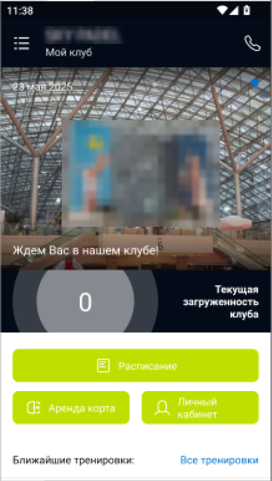
Почему размыто?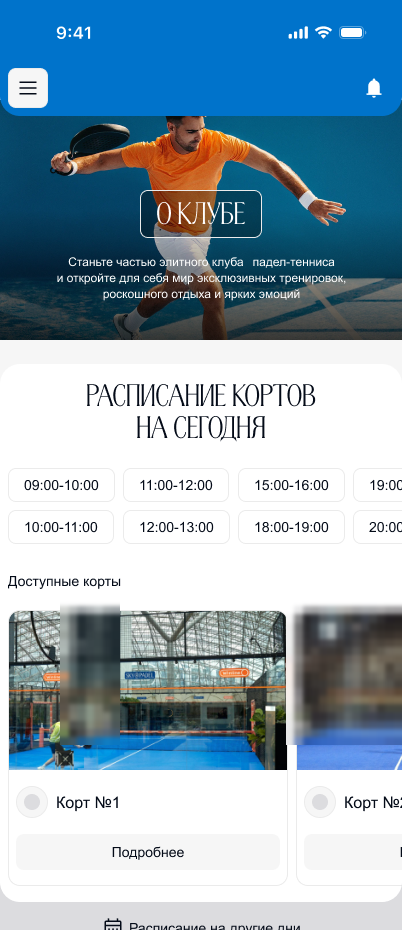
Почему размыто?14 проблем в пяти разделах
Я прошла приложение на iOS и Android: карточка клуба, расписание, бронирование, авторизация, личный кабинет. Для каждого замечания записала, почему оно мешает, как эту задачу решают другие приложения для падела и что предлагаю я. Несколько примеров:
| Что мешало | Что предложила |
|---|---|
| AndroidКрупный блок «Текущая загруженность» в центре главной вытесняет кнопки «Расписание» и «Аренда корта» | Отдать приоритет бронированию. Загруженность видна по свободным слотам в расписании |
| В процессе аренды корта нельзя взять инвентарь | Один сценарий: корт, тренер и инвентарь как шаги одной брони |
| Фильтр «Утро / День / Вечер» без расшифровки, какие это часы | Показывать сами временные интервалы |
| iOSТри кнопки на главной ведут на один экран «Расписание» | Одна точка входа, турниры и тренировки — в разных разделах |
| AndroidБоковое меню на 18 пунктов | Нижняя навигация на 4 раздела, «Мои тренировки» и «Моя аренда» — в профиле |
| Прошедшие события показываются как «Список пуст» с грустным смайликом | Сохранять историю и показывать прошедшее в неактивном виде |
| Вход только через WhatsApp, и код не приходит | Вход по телефону или почте с паролем и восстановлением доступа |
Как было
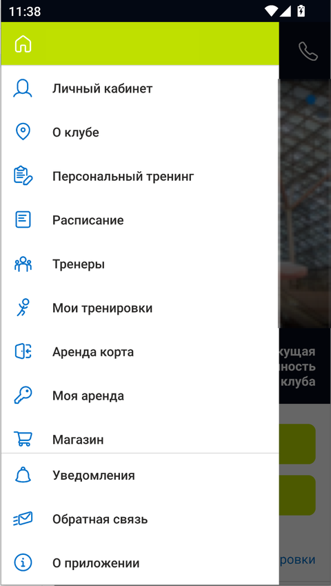
Почему скрыто?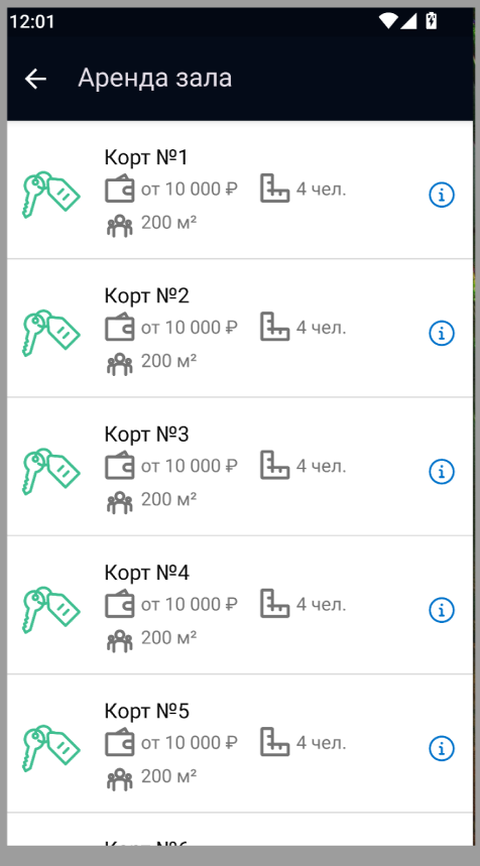
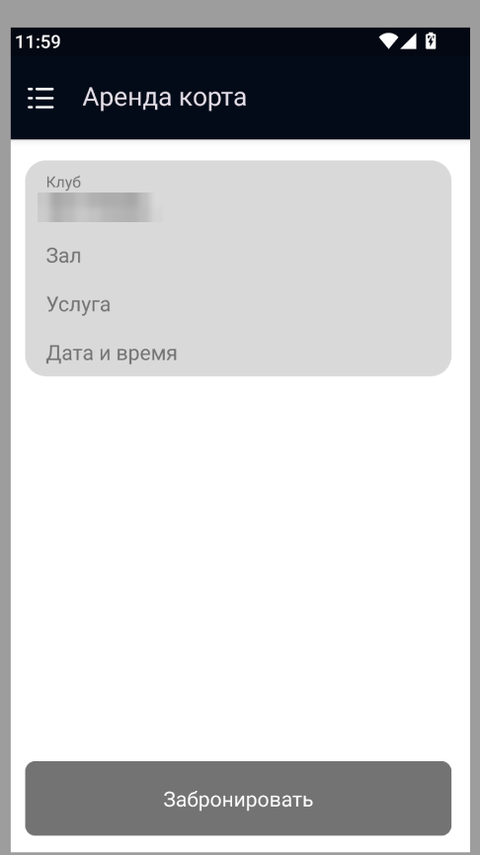
Почему скрыто?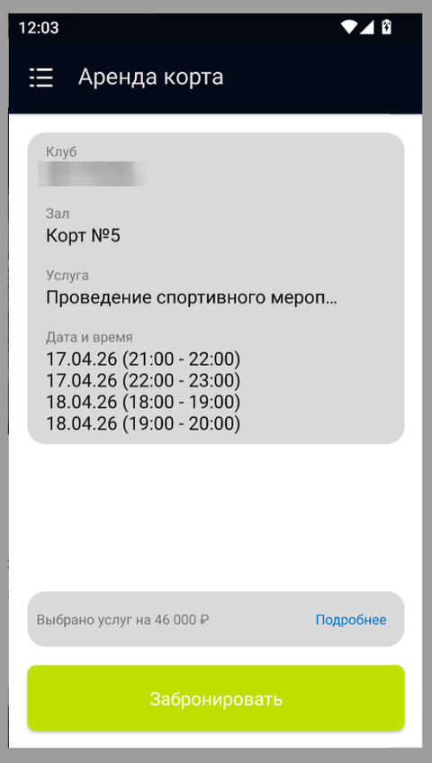
Почему скрыто?Три главных решения
Вся бронь на одном экране
Раньше корт, тренер и инвентарь бронировались отдельно. Теперь это один экран, который собирается сверху вниз: дата, интервалы, корт, тип тренировки, тренер под каждый слот и оборудование.
- Можно выбрать несколько интервалов подряд без повторного захода в расписание
- Тренер подбирается под конкретный слот, а не на всю бронь
- Итог разложен по строкам: видно, из чего складывается сумма
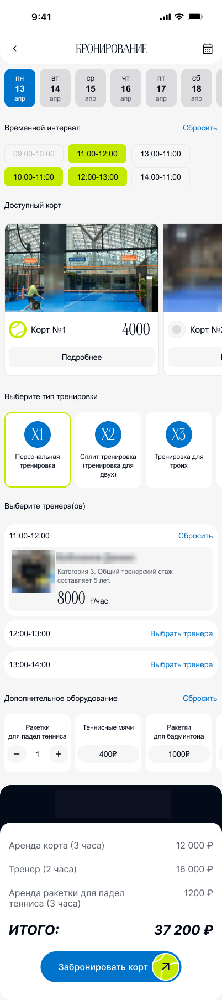
Управление бронью без звонка в клуб
Отменить или перенести бронь раньше можно было только через администратора. Я добавила историю броней со статусами, а отмену и перенос пользователь теперь делает сам.
- Статусы читаются сразу: ожидает оплаты, подтверждено, оплачено, отменена
- Отмена с причиной, чтобы клуб понимал, почему люди отказываются
- Перенос пересчитывает стоимость и заранее предупреждает о разнице
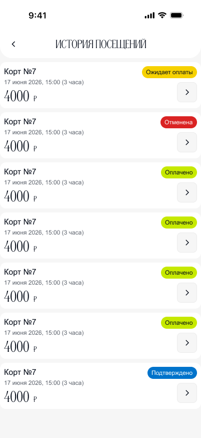
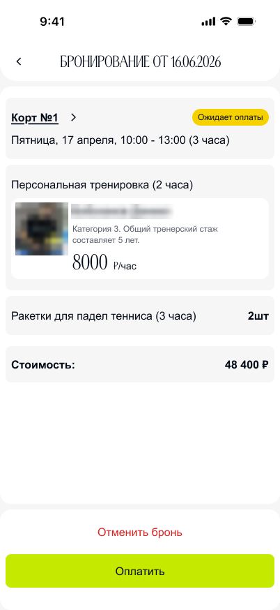
Турниры и занятия отдельно от аренды
В старой версии турниры и тренировки лежали в одном списке. Мероприятия получили свой раздел и понятные состояния карточки.
- Цветовая метка отличает турнир от группового занятия
- Количество мест видно до записи
- Отдельные состояния «Нет мест» и «Запись только офлайн»
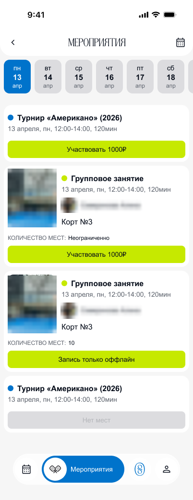
Каждый сценарий доведён до конца
Для разработки я описала состояния экранов: пустые, промежуточные, ошибки, подтверждения. В макете больше 100 экранов и состояний. Перенос брони, например, заканчивается понятным ответом: цена изменилась, разницу вернёт менеджер, заявку можно найти в «Обратной связи».
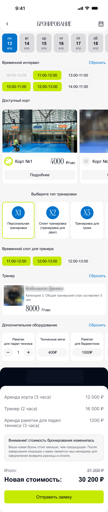
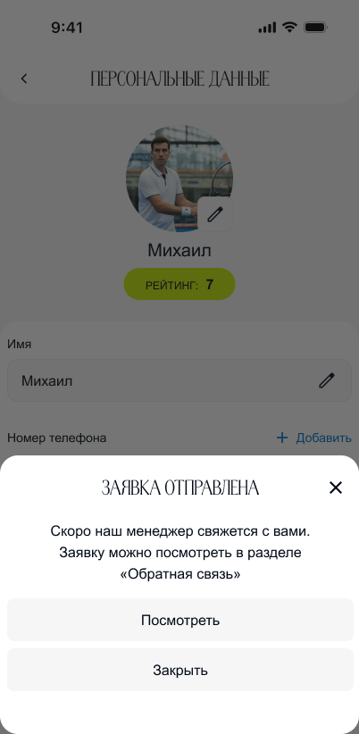
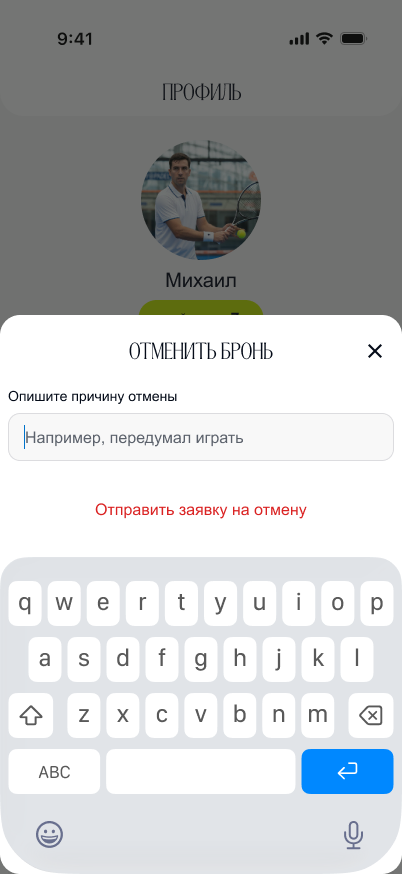
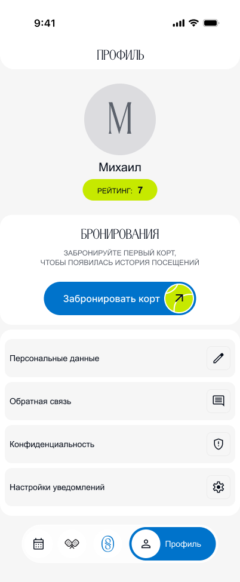
Что изменилось
Корт, тренер и инвентарь оформляются на одном экране, без переходов между разделами.
Перенос и отмена делаются в приложении, без звонка администратору. Версия уже в сторах.
Единая семантика цвета для статусов и общие компоненты вместо разрозненных экранов.
Договорилась бы о метриках до старта
Раньше договорилась бы с командой о метриках. Тогда эффект редизайна можно было бы показать не только числом кликов, но и конверсией в бронь до и после.